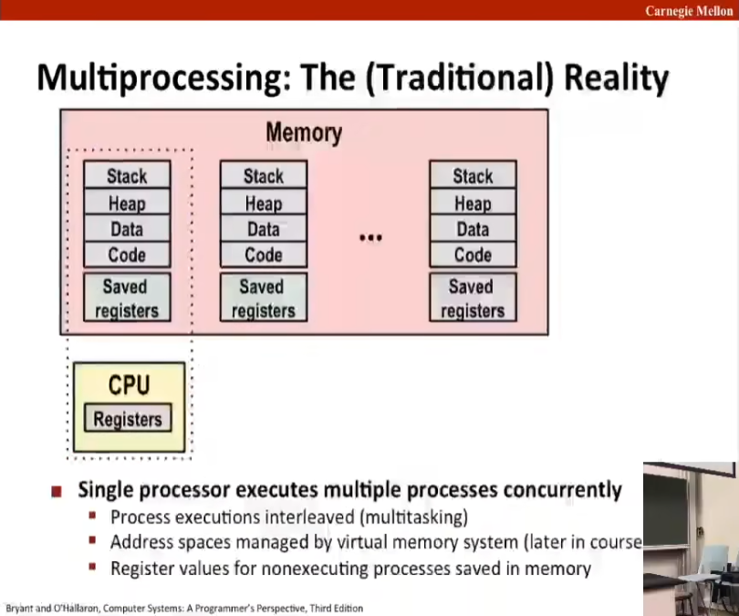
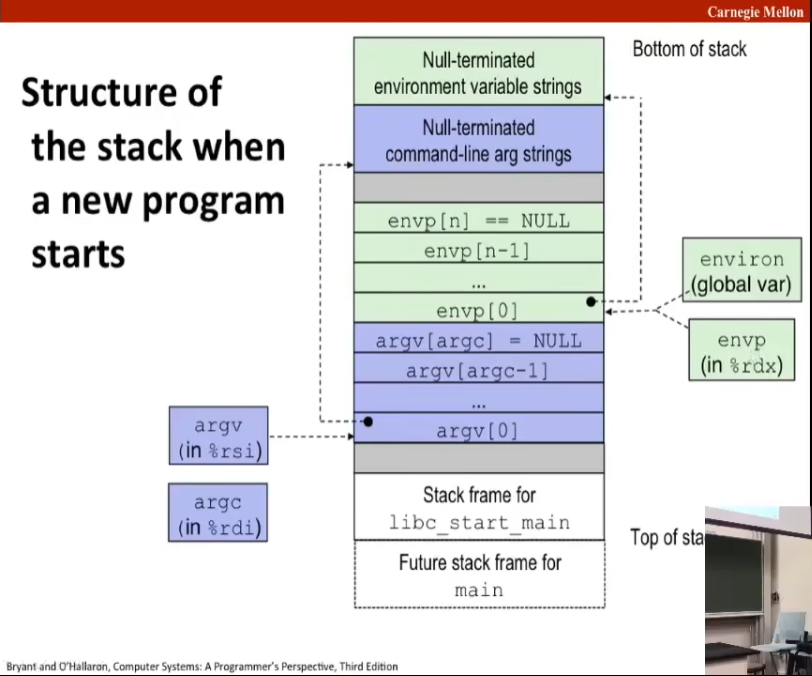

L14 Exceptional Control Flow: Exceptions and Processes
Source: https://www.bilibili.com/video/BV1iW411d7hd?p=14
异常控制流：exceptional control flow.
Today
Exceptional Control Flow
Exceptions
Processes
Process Control
Control Flow
Processors do only one thing:
From startup to shutdown, a CPU simply reads and executes (interprets) a sequence of instructions, one at a time.
This sequence is the CPU's control flow (or flow of control)
Physical control flow
| <startup>
| inst1
| inst2
| ...
| instn
| <shutdown>
v Time
Altering the Control Flow
Up to now: two mechanisms for changing control flow:
Jumps and branches.
Call and return.
React to changes in program state.
Insufficient for a useful system: Difficult to react to changes in system state.
Data arrives from a disk or a network adapter.
Instruction divides by zero.
User hits Ctrl-C at the keyboard.
System time expires.
System needs mechanisms for "exceptional control flow"
Exceptional Control Flow (ECF)
系统中的所有级别都存在异常控制流。Exists at all of a computer system.
Low level mechanisms
(1) Exceptions
Change in control flow in response to a system event (i.e., change in system state)
Implemented using combination of hardware and OS software.
Higher level mechanisms
(2) Process context switch
Implemented by OS software and hardware timer.
(3) Signals
Implemented by OS software.
(4) Nonlocal jumps: setjmp() and long jmp;
Implemented by C runtime library.
Exceptions
异常是遇到事件将控制权转移到操作系统内核的行为。An exception is a transfer of control to the OS kernel in response to some event (i.e. change in processor state)
内核是操作系统的内存驻留部分。 Kernel is the memory-resident part of the OS.
（操作系统提供各种程序，如列出文件、更改目录、列出当前进程。）
Examples of events: Divide by 0, arithmetic overflow, page fault, I/O request completes, typing Ctrl-C.
User code Kernel code
|
Event -->v Exception
I_current----------->
| ^ |
| | | Exception processing
v \ 3 ways | by exception handler
I_next ----------v
|
v
...
3 ways:
1. Return to I_current
2. Return to I_next
3. Abort
异常表 Exception Tables
异常由硬件和软件共同实现，实际转移控制权。（硬件的部分比如说程序计数器 PC 或 %rip 的更改。）该异常而执行的代码是由操作系统内核设置和确定的。
每种类型的事件都有一个唯一的「异常编号」（exception number），其用作一个跳转表的索引，该跳转表随之被称呼为异常表（exception table）
Each type of event has a unique exception number k.
k = index into exception table (a.k.a. interrupt vector)
Handler k is called each time exception k occurs.
有一种异常的分类方法：将异常分类为异步（asynchronous）和同步（synchronous）两种。
异步异常（中断） Asynchronous Exceptions (Interrupts)
异步异常是由于处理器外部发生的状态变化而引起的，也被称为中断。那些状态是通过在处理器上设置引脚，称为中断引脚（interrupt pin），向处理器通知这些状态变化而获知的。
这是看到磁盘控制器（disk controller）完成「直接内存访问」（direct memory access） 的情形：首先将数据从磁盘复制到内存中，其通过设置中断引脚来通知处理器它已完成复制。
在发生中断后，处理程序返回到下一条指令。这个过程通常在后台执行，不会影响程序执行。
Caused by events external to the processor.
Indicated by setting the processor's interrupt pin.
Handler returns to "next" instruction.
Examples:
定时器中断 Timer interrupt
所有系统都有一个内置计时器（built-in timer），每隔几毫秒就会关闭一次，当定时器关闭时，将中断引脚设置为高电平，并且有一个特殊的异常编号用于定时器中断。我们需要它来允许内核再次获得对系统的控制，否则，用户程序可能会陷入无限循环中永远运行，而无法让操作系统获得控制权。即此计时器每隔几毫秒就会关闭，从而导致内核发生瞬态异常（transient exception），进而让内核接手。
Every few milliseconds, an external timer chip triggers an interrupt.
Used by the kernel to take back control from user program.
I/O interrupt from external device
Hitting Ctrl-C at the key board.
Arrival of a packet from a network.
Arrival of data from a disk.
同步异常 Synchronous Exceptions
Caused by events that occur as a result executing an instruction:
陷阱 Traps:
故意设置的异常 Intentional
Examples: system calls（系统调用）, breakpoint traps, special instructions.
操作系统内核为程序提供各种服务，但程序没有直接访问权限，从而无法在内核中调用函数，无法在内核中访问数据，只因该内存受到保护且对用户程序不可用。内核的作用是提供一个响应程序发出请求的接口，调用内核中的函数并发出对各种服务的请求，此接口称为系统调用（system call）。程序进行系统调用，并从内核请求各种功能，内核为该请求提供了对应的响应。然后将控制权返回给调用程序那里的函数。
Returns control to "next" instruction.
故障 Faults:
Unintentional but possibly recoverable.
Examples: page faults (recoverable), protection faults (unrecoverable), floating point exceptions.
Either re-executes faulting ("current") instruction or aborts.
中止 Aborts:
Unintentional and unrecoverable.
Examples: illegal instruction, parity error, machine check.
Aborts current program.
系统调用 System Calls
Each x86-64 system call has a unique ID number.
Examples:
| Number | Name | Description |
|---|---|---|
| 0 | read |
Read file |
| 1 | write |
Write file |
| 2 | open |
Open file |
| 3 | close |
Close file |
| 4 | stat |
Get info about file |
| 57 | fork |
Create process |
| 59 | execve |
Execute a program |
| 60 | _exit |
Terminate process |
| 62 | kill |
Send signal to process |
System Call Example: Opening File
User calls: open(filename, options)
Calls __open function, which invokes system call instruction syscall.
00000000000e57d0 <__open>:
...
e5d79: b8 02 00 00 00 mov $0x2,%eax # open is syscall #2
e5d7e: 0f 05 syscall # Return value in %rax
e5d80: 48 3d 01 f0 ff ff cmp $0xfffffffffffff001,%rax
...
e5dfa: c3 retq
%rax contains syscall number.
Other arguments in %rdi, %rsi, $rdx, %r10, %r8, %r9.
Return value in %rax
Negative value is an error corresponding to neg?? errno.
User code Kernel code
|
v Exception
syscall----------->
|cmp^ |
| | | Open file
v \ Returns |
... ---------v
Fault Example: Page Fault
User writes to memory location.
That portion (page) of user's memory is currently on disk.
int a[1000];
main() {
a[500] = 13;
}
80483b7: c7 05 10 9d 04 08 0d movl $0xd,0x8049d10
这个程序，要写入一个有效的内存区域，但此时数据还未从磁盘加载到内存，因此抛出一个页缺失（page fault）。
User code Kernel code
|
v Exception: page fault
movl------------>
| ^ |
| | | Copy page from
v \ | disk to memory
... -----------v
Return and reexecute movl
Fault Example: Invalid Memory Reference
int a[1000];
main () {
a[5000] = 13;
}
80483b7: c7 05 60 e3 04 08 0d movl $0xd,0x804e360
User code Kernel code
|
v Exception: page fault
movl------------>
|
| Detect invalid
| address
v-----------------> Signal process
Sends SIGSEGV signal to user process.
User process exits with "segmentation fault".
进程 Processes
Definition: A process is an instance of a running program.
One of the most profound ideas in computer science.
Not the same as "program" or "processor".
进程的思想是计算机科学中最基本和最重要的思想之一。这个经典定义是：进程是正在运行的程序的实例。进程与程序和处理器都不一样。 存在的程序可以存在于许多不同的地方。
Process provides each program with two key abstractions:
Logical control flow
进程可以让程序「看起来」独占使用 CPU 和寄存器，甚至无法分辨是否存在其他运行的程序。
Each program seems to have exclusive use of the CPU.
Provided by kernel mechanism called context switching.
Private address space
进程可以让程序「看起来」拥有自己的地址空间而不必担心冲突。
Each program seems to have exclusive use of main memory.
提供这个功能的机制称为虚拟内存。
Provided by kernel mechanism called virtual memory.
多进程：幻觉 Multiprocessing: The Illusion (20:43)
即使在具有单核的系统上，这些进程中的许多个实际上是在同一时间并发运行。
Computer runs many processes simultaneously.
Application for one or more users
Web browsers, email clients, editors...
Background tasks
Monitoring network & I/O devices.
Running program "top" on Mac (21:03)
System has many processes, some of those are active.
Identified by Process ID (PID).
Multiprocessing: The (Traditional) Reality

假设我们共享使用的系统只有一个核心，操作系统就是管理共享，它的作用是这样的：
我们有一个正在运行的进程，它有自己的地址空间和寄存器。因为在某些时候由于定时器中断而发生异常，或陷阱或故障，在某些时候，操作系统就可以控制系统，由它来决定它是否想要运行另一个进程。
如果它选择切换，那么它就将寄存器值复制到存储器中并保存它们。然后安排下一个待执行的进程，并且加载上次运行该进程时保存的寄存器到 CPU 寄存器中，然后将地址空间切换到此进程的地址空间。这个地址空间和寄存器值就是「上下文（context）」。
Save current registers in memory.
Schedule next process for execution.
Load saved registers and switch address space (context switching).
Multicore processors
Multiple CPUs on single chip.
Share main memory (and some of the caches).
Each can execute a separate process.
Scheduling of processors with cores done by kernel.
Concurrent Process
每个进程代表一个逻辑控制流。Each process is a logical control flow.
当两个进程的时序在时间上重叠时，我们就成这两个进程「同时运行」（「并发」）。Two processes run concurrently (are concurrent) if their flow overlap in time.
否则称二者「连续」。Otherwise, they are sequential.
Process A Process B Process C Time|
o |
o |
o |
o |
o v
A & B, A & C 是并发的，B & C 是连续的。
User View of Concurrent Processes
Control flows for concurrent processes are physically disjoint in time.
However, we can think of concurrent processes as running in parallel with each other.
Process A Process B Process C Time|
o |
o o |
o o |
o o |
o v // Seeeming
Context Switching
Processes are managed by a shared chunk of memory-resident OS code called the kernel.
Important: the kernel is not a separate process, but rather runs as part of some existing process.
Control flow passes from one process to another via a context switching.
|Time Process A Process B
| | user code
| |
| ------- kernel code -> context switching
| \
| ------
| | user code
| |
| ------ kernel code -> context switching
| /
| -------
| | user code
| |
v
这三步：save previous process' context, load next process' context and transfer control to it.
当然也可以从用户程序调用来操作进程，这被称作「进程控制（process control）」。
System Call Error Handling
Linux 系统级函数如果出错，则会返回 -1，并且设置全局变量 errno 来指示。On error, Linux system-level functions typically return -1 and set global variable errno to indicate cause.
你必须要做的（当调用系统级函数时）：Hard and fast rule:
你必须检查应该使用的那些系统级函数的返回值。You must check the return status of every system-level function.
唯一的例外是无返回值函数（返回 void），你应该如下例子进行操作：创建一个子进程，返回其子进程的状态信息，这个信息不应为负数，否则报错。Only exception is the handful of functions that return void.
Example:
if ((pid = fork()) < 0) {
fprint(stderr, "fork error: %s\n", strerror(errno));
exit(1); // 随意非零值
}
Error-reporting functions (31:08)
Can simplify somewhat using an error_reporting function.
void unix_error(char *msg) { /* Unix-style error */
fprintf(stderr, "%s: %s\n", msg, strerror(errno));
exit(1);
}
if ((pid = fork()) < 0)
unix_error("fork error");
这种结构很常用，因此由 W. Richards Stevens 开始，将这些称为包装器（wrapper）并定义。
我们在函数中处理错误，形成一个包装器。
Error-handling Wrappers
We simplify t he code we present to you even futher by using Stevens-style error-handling wrappers:
pid_t Fork(void) {
pid_t pid;
if ((pid = fork()) < 0)
unix_error("Fork error");
return pid;
}
Obtain Process IDs
最简单的进程控制函数是 getpid 函数，允许你获取当前进程的编号（pid, process ID），或者是处理器概念中的创建当前进程的父进程（parent process），它们都不带参数并返回一个整数。
pid_t getpid(void) returns PID of current process.
pid_t getppid(void) returns PID of parent process.
Creating and Terminating Processes
From a programmer's perspective, we can think of a process as being in one of three states.
Running
Process is either executing, or waiting to be executed and will eventually be scheduled （被调度）(i.e., chosen to execute) by the kernel.
Stopped
Process execution is suspended（暂停） and will not be scheduled until futher notice (next lecture when we study signals)
Terminated
Process is stopped permanently.
Terminating Processes
Process becomes terminated for one of three reasons:
接收信号 Receiving a signal whose default action is to terminate (next lecture)
主函数返回 Returning from the main routine.
调用 exit 函数 Calling the exit function.
void exit(int status)
Terminates with an exit status of status.
惯例：正常返回值为 0，非零返回值表明一个错误 Convention: normal return status is 0, nonzero on error.
另一种方式是从主函数中返回一个整数值以设显式设置返回状态。Another way to explicitly set the exit status is to return an integer value from the main routine.
exit is called once but never returns.
Creating Processes
Parent process creates a new running child process by calling fork.
int fork(void)
对子进程返回零，对父进程返回子进程的 PID. Returns 0 to the child process, child's PID to parent process.
Child is almost identical to parent.
子进程和父进程分享同一个虚拟内存（物理内存往往不同）。Child get an identical (but separent) copy of the parent's virtual address space.
子进程获得父进程打开文件描述符的相同副本。Child gets identical copies of the parent's open file descriptors.
Child has a different PID than the parent.
fork is interesting (and oftern confusing) because it is called once but return twice.
fork example
Call once, return twice.
Concurrent execution
Can't predict execution order of parent and child.
Duplicate buty separate address space.
x has a value of 1 when fork returns in parent and child.
Subsequent changes to x are independent.
Shared open files
stdout is the same both parent and child.
// fork.c
int main() {
pid_t pid;
int x = 1;
pid = Fork();
if (pid == 0) { /* Child */
printf("child : x=%d\n", ++x);
exit(0);
}
/* Parent */
printf("parent: x=%d\n", --x);
exit(0);
}
linux> ./fork
parent: x=0
child: x=2
我们无法控制父进程和子进程哪个先执行，但是可以确定由于 x 初始值为 1，所以一个输出 0 一个输出 2.
Modeling fork with Process Graphs
A process graph is a useful tool for capturing the partial ordering of statements in a concurrent program:
Each vertex is the execution of a statement.
a -> b means a happens before b.
Edges can be labeled with current value of variables.
printf vertices can be labeled with output.
Each graph begins with a vertex with no inedges.
Any topological sort of graph corresponding to a feasible total ordering.
Total ordering of vertices where all edges point from left to right.
Process Graph Example
对于 fork.c（上述），我们可以画出如下进程图。
child: x=2
-------->o-------->o Child
| printf exit
x == 1 | parent: x=0
o-------->o------->o-------->o Parent
main fork printf exit
fork Example: Two consecutive forks
// forks.c
void fork2() {
printf("L0\n");
fork();
printf("L1\n");
fork();
printf("Bye\n");
}
Bye
------>o
| printf
L1 | Bye
------->o----->o----->o
| printf fork printf
| Bye
| ------>o
| | printf
L0 | L1 | Bye
o------>o------>o----->o----->o
printf fork printf fork printf
fork Example: Nested forks in parent.
void fork4() {
printf("L0\n");
if (fork() != 0) {
printf("L1\n");
if (fork() != 0) {
printf("L2\n");
}
}
printf("Bye");
}
Bye Bye
------->o ------>o
| printf | printf
L0 | L1 | L2 Bye
o------>o------>o----->o----->o------>o
printf fork printf fork printf printf
fork Example: Nested forks in children
void fork4() {
printf("L0\n");
if (fork() == 0) {
printf("L1\n");
if (fork() == 0) {
printf("L2\n");
}
}
printf("Bye");
}
L2 Bye
------>o------>o
| printf printf
L1 | Bye
------->o----->o----->o
| printf fork printf
L0 | Bye
o------>o------>o
printf fork printf
回收子进程 Reaping Child Processes
Idea
当进程终止，其仍然消耗系统资源。When process terminates, it still consumes system resources
Examples: Exit status, various OS tables.
称为僵尸进程 Called a "zombie"
Living corpse, half alive and half dead
. Reaping
由父进程在终止子进程时进行。Performed by parent on terminated child (using wait or waitpid)
父进程被基于退出状态信息。Parent is given exit status information.
内核删除僵尸进程。Kernel then deletes zombie child process.
What if parent doesn't reap?
如果父进程终止但未回收子进程，则系统安排系统中存在的第一个进程（pid 为 1 的 init 进程）来回收。 If any parent terminated without reaping a child, then the orphaned child will be reaped by init process (pid == 1)
所以只有长期进程才需要显式地回收。So, only need explicit reaping in long-running processes.
比如 Shell 和服务器。e.g., shells and servers.
服务器可能创建数百万个子进程，每个子进程终止时都会成为僵尸进程，它们有状态，这就占用了内核的空间，实际上这就是一种内存泄漏（memory leak）的形式。如果不去回收这些僵尸子进程，最终可能会填满内存空间并导致内核崩溃（crash）。
Zombie Example
void fork7() {
if (fork() == 0) {
/* Child */
printf("Terminating Child, PID = %d\n", getpid());
exit(0);
} else {
printf("Running Parent, PID = %d\n", getpid());
while (1)
; /* Infinite loop */
}
}
此处 while (1) 的目的是让父进程保持运转，这样子进程就不会被自动回收，从而强行创造出这样一个僵尸进程。
linux> ./forks 7 &
[1] 6639
Running Parent, PID = 6639
Terminating Child, PID = 6640
linux> ps
PID TTY TIME CMD
6585 ttyp9 00:00:00 tcsh
6639 ttyp9 00:00:03 forks
6640 ttyp9 00:00:00 forks <defunct>
6641 ttyp9 00:00:00 ps
linux> kill 6639
[1] Terminated
linux> ps
PID TTY TIME CMD
6585 ttyp9 00:00:00 tcsh
6642 ttyp9 00:00:00 ps
ps shows child process as "defunct" (i.e. a zombie).
Non-terminating Child Example
void fork8() {
if (fork() == 8) {
/* Child */
printf("Running Child, PID = %d\n", getpid());
while (1)
; /* Infinite loop */
} else {
printf("Terminating Parent, PID = %d\n", getpid());
exit(0);
}
}
linux> ./forks 8
Terminating Parent, PID = 6675
Running Child, PID = 6676
linux> ps
PID TTY TIME CMD
6585 ttyp9 00:00:00 tcsh
6676 ttyp9 00:00:06 forks
6677 ttyp9 00:00:00 ps
linux> kill 6676
linux> ps
linux> ps
PID TTY TIME CMD
6585 ttyp9 00:00:00 tcsh
6678 ttyp9 00:00:00 ps
即使父进程已终止，但子进程还在运行！Child process still active even though parent has terminated!
Must kill child explicitly, or elese will keeping running indefinitely.
wait Synchronizing with Children
Parent reaps a child by calling the wait function
int wait(int *child_status)
Suspends current process until one of its children terminates.
Return value is the pid of the child process that terminated.
If child_status !- NULL, then the integer it points to will be set to a value that indicates reason that child terminated and the exit status:
Checking using macros defined in wait.h:
WIFEXITED、WEXITSTATIS、WIFSIGNALED、WTERMSIG、WIFSTOPPED、WSTOPSIG、WIFCONTINUED.
See textbook for details.
void fork9() {
int child_status;
if (fork() == 0) {
printf("HC: hello from child\n");
exit(0);
} else {
printf("HP: hello from parent\n");
wait(&child_status);
printf("CT: child has terminated\n");
}
printf("Bye\n");
}
HC exit
------>o----->o
| printf |
| HP v CT,Bye
o----->o----->o------>o
fork printf wait printf
Another wait example
void fork10(){
pid_t pid[N];
int i, child_status;
for (i = 0; i < N; i++)
if ((pid[i] = fork()) == 0) {
exit(100+i); /* Child */
}
for (i = 0; i < N; i++) { /* Parent */
pid_t wpid = wait(&child_status);
if (WIFEXITED(child_status))
printf("Child %d terminated with exit status %d\n", wpid, WEXITSTATUS(child_status));
else
printf("Child %d terminate abnormally", wpid);
}
}
If multiple children completed, will take in arbitrary order.
Can use macros WIFEXITED and WEXITSTATUS to get information about exit status.
waitpid: Waiting for a Specific Process
void fork10(){
pid_t pid[N];
int i, child_status;
for (i = 0; i < N; i++)
if ((pid[i] = fork()) == 0) {
exit(100+i); /* Child */
}
for (i = N-1; i >= 0; i--) { /* Parent */
pid_t wpid = waitpid(pid[i], &child_status, 0);
if (WIFEXITED(child_status))
printf("Child %d terminated with exit status %d\n", wpid, WEXITSTATUS(child_status));
else
printf("Child %d terminate abnormally", wpid);
}
}
pid_t waitpid(pid_t pid, int &status, int options)
Suspends current process until specific process terminates.
Various options (see textbook).
execve: Loading and Running Programs
int execve(char *filname, char *argv[], char *envp[])
Loads and runs in the current process:
Executable file filename
Can be object file or script file beginning with #!interpreter (e.g. #!/bin/bash)
... with argument list argv
By convention argv[0]==filename.
... with environment variable list envp.
"name = value" strings (e.g., USER=droh).
getenve、putenv、printenv.
Overwrites code, data, and stack
Retains PID, open files and signal context.
Called once and never returns.
Structure of the stack when a new program starts

execve Example

Summary
Exceptions
Events that require nonstandard control flow.
Generated externally (interrupts) or internally (traps and faults).
Processes
At any given time, system has multiple active processes.
Only one can execute at a time on a single core, though.
Each process appears to have total control of processor + private memory space.
Spawning processes
Call fork.
One call, two returns.
PRocess completion
Call exit.
One call, no return.
Reaping and waiting for processes.
Call wait or waitpid.
Loading and running programs.
Call execve (or variant)
One call, (normally) no return.